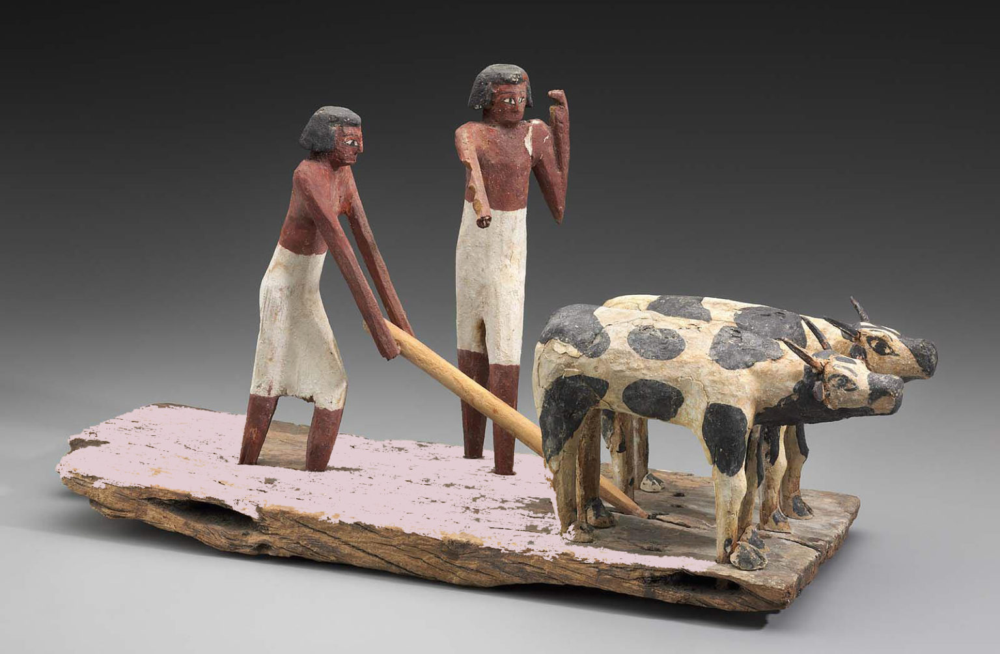
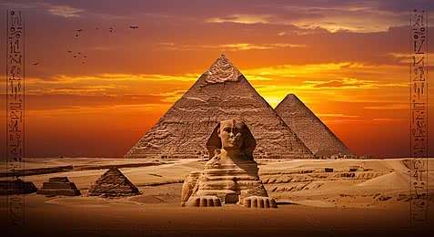
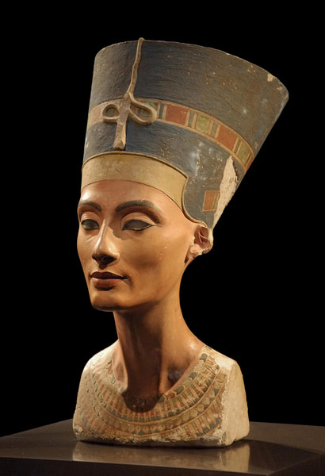

Ancient Era

The Old Pharaonic Era was one of the earliest periods of ancient Egypt. During this time, the Egyptian state became stronger and more organized. The pharaohs built great monuments, especially the pyramids, and ancient Egyptians made progress in writing, architecture, religion, and engineering.
Medieval Era

The Middle Pharaonic Era was a period of stability and recovery after times of weakness. Egypt became united again, trade increased, and art and literature developed. The pharaohs worked to strengthen the government and protect the country.
Modern Era

The New Kingdom was one of the strongest periods in ancient Egyptian history. Egypt became powerful, wealthy, and expanded its influence outside its borders. Great temples were built, and famous rulers such as Hatshepsut, Tutankhamun, and Ramesses II lived during this era.